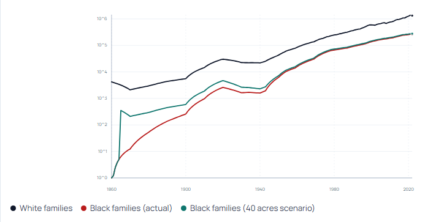
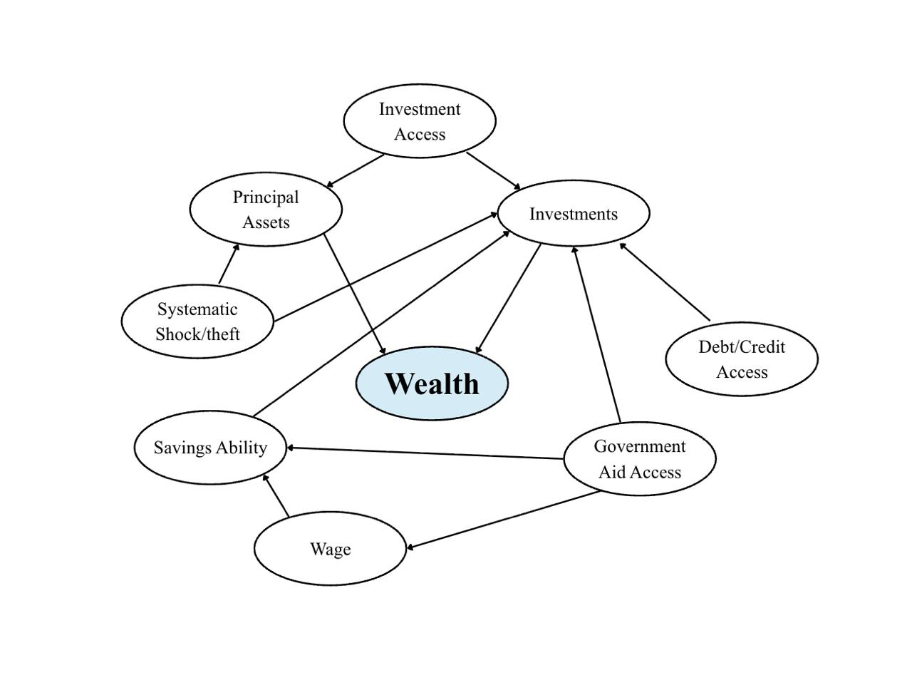
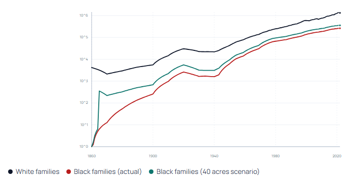
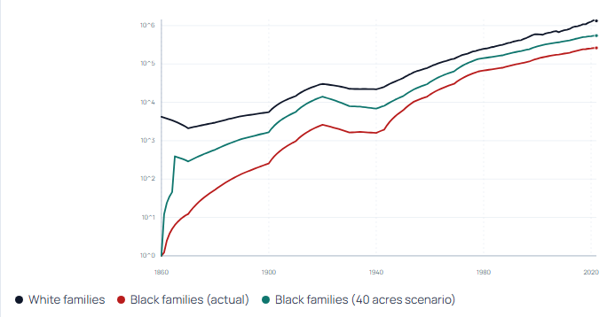
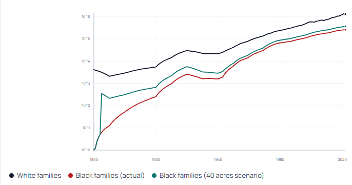
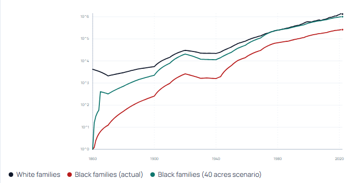

In January 1865, near the end of the Civil War, Union General William Tecumseh Sherman issued Special Field Order No. 15, a policy that briefly promised land to formerly enslaved families in the American South. The order set aside about 400,000 acres of confiscated Confederate land along the coasts of Georgia, South Carolina, and Florida. Black families who had just gained freedom would receive plots of up to 40 acres, along with access to surplus army mules. For the first time, thousands of freed people had the possibility of starting their lives not only with freedom, but with land ownership and economic independence.
The promise did not last long. Later that same year, President Andrew Johnson reversed the policy and returned most of the land to former Confederate landowners. The land that might have formed the foundation of Black economic independence disappeared almost overnight. Without property or assets, many freed families were forced into sharecropping or low-wage labor, jobs that made it extremely difficult to build wealth.
This moment matters because wealth grows differently than wages. Income can support a family in the present, but assets like land can grow, be invested, and be passed down across generations. In the United States, much of today's wealth inequality comes from these long-term differences in asset ownership. According to the United States Census Bureau, Black households make up 13.6% of all U.S. households but hold only 4.7% of all wealth. And their median wealth ($24,520) was about one-tenth the median wealth of households with a White householder ($250,400). This is largely because wealth has compounded across generations for families who owned property.
This project asks a simple but powerful question: What if the promise of 40 acres had been kept?
Using historical data and a simulated dataset of 10,000 Black families and comparable white families, we model how wealth might have evolved from 1865 to today if each freed family had started with land that could be kept, sold, or passed down to descendants. By replaying major economic moments—from Reconstruction to the Great Migration, the postwar housing boom, and the 2008 financial crisis—we can explore how one early policy decision might have changed the trajectory of wealth in America.

To estimate how wealth might evolve over time under different starting conditions, we simulated the average wealth of 10,000 families across multiple generations from 1865 to the present. The model tracks three groups: white families in the historical timeline, Black families in the historical timeline, and Black families in a counterfactual scenario where each family begins with ownership of 40 acres of land. Wealth in the model grows through income savings and asset appreciation over time, while also responding to major economic periods such as the Great Depression, postwar economic expansion, deindustrialization, and the 2008 financial crisis.

The simulation's framework was established by first identifying the structural impacts on income and asset appreciation through a causal diagram, which identified the drivers of wealth such as capital/loan access, institutional exclusion, and systemic extraction. These influencing relationships were then quantified using data from peer-reviewed research and government sources. The impact factors are as follows:
The results show that the counterfactual land ownership produces a noticeable increase in early wealth accumulation. In the late 19th and early 20th centuries, families with land began with a higher baseline and were able to build wealth more quickly than families without assets. However, after around the 1940s the two Black wealth trajectories began to move closer together. While the 40-acre scenario still remains slightly higher, the difference becomes much smaller compared to the early decades.
This pattern suggests that the initial land grant provides an early economic advantage but does not completely transform long-term wealth outcomes on its own. Other structural factors, including wage inequality, discriminatory housing policies, and unequal access to credit or education, likely continue to influence wealth accumulation in ways that a single early asset cannot fully overcome. We decided to take a closer look into what factors affect the wealth gap and what removing these factors would do to our final plot.

In the second experiment, we look at the role that savings play in shaping long-term wealth accumulation. Historically, Black workers were disproportionately excluded from early Social Security benefits and labor protections under New Deal policies because agricultural and domestic workers were initially not included in these programs. Since Black workers were heavily concentrated in these occupations, many were prevented from building retirement savings and hence building wealth. This effect was modeled as a 2% reduction in savings rate from 1935 (beginning of Social Security) to 1954 and equalized by modeling no reduction. In addition, lower access to stable banking and credit historically reduced opportunities to consistently save and invest income. This was modeled as the Black family savings rate being 3.9% vs. 5% for a white family and equalized by both being made 5%.
The simulation results show that equalizing savings rates produces a steady improvement in long-term wealth outcomes for Black households. Because savings compound across generations, even modest increases in savings rates generate substantial differences in wealth by the end of the simulation period.

This effect was modeled by Black family income being calculated as white income multiplied by the NBER observed income ratio, and then the growth rate was reduced by 20%. This reflects the historically documented wage gap between Black and white workers as well as reduced opportunities for upward mobility in certain sectors of the labor market. The scenario was then equalized by modeling both groups with identical income levels and income growth rates.
Income plays a central role in wealth accumulation because it determines how much households are able to save and invest over time. When incomes are lower, even small differences in earnings can compound across generations by limiting savings and investment opportunities. By equalizing income in the model, we isolate the impact of wage disparities on long-term wealth growth and observe how closing the income gap affects the wealth trajectories of families over time.
The graph illustrates the significant impact of equal income, with the projected wealth trajectory of Black families moving substantially closer to that of white families compared to the historical outcome.

This effect was modeled using a probabilistic framework where each year during the Jim Crow era there was a 1% probability of a 50% net loss in wealth, and in the modern era a 2% probability of a 20% net loss in wealth. These events represent mechanisms such as theft, violence, forced displacement, discriminatory policies, and other forms of systemic asset loss. The scenario was then equalized by setting both probabilities to 0, allowing households to accumulate wealth without the risk of these losses.
From the graph, the increase in wealth under this scenario appears relatively small compared to the other experiments. While removing systematic wealth losses does improve the long-term trajectory slightly, the results suggest that factors such as income and savings rates have a larger impact on wealth accumulation over time.

This effect was modeled by applying all three equalizations from Experiments 2, 3, and 4 simultaneously. In this scenario, Black families were modeled with equal savings rates, equal income levels and growth, and no probability of systematic wealth loss. Applying these changes together allows the model to capture the combined effect of removing multiple structural barriers at once.
Because wealth accumulation compounds over time, improvements in several areas can reinforce one another. Higher income increases the amount households are able to save, equal savings rates allow more income to be invested, and the removal of wealth shocks prevents accumulated assets from being lost. As a result, these factors create a compounding benefit when applied together.
The graph shows a much larger improvement in wealth outcomes under this scenario compared to the individual experiments. Black family wealth grows significantly faster and moves much closer to the projected wealth of white families and even overlaps it, highlighting how multiple structural factors interact to shape long-term wealth accumulation.
Comparing the experiments helps clarify which structural factors have the greatest influence on long-term wealth accumulation. The baseline simulation shows that providing land through the 40-acre policy produces a clear early advantage. Families beginning with land are able to generate income from the asset, build savings earlier, and pass property down across generations. However, over time this advantage shrinks as other structural barriers begin to dominate the wealth trajectory.
Equalizing savings rates produces a steady increase in wealth compared to the original 40-acre scenario. Because a larger portion of income is consistently saved and invested, wealth compounds more effectively across generations. However, the improvement remains moderate since savings ultimately depend on the level of income households earn.
Equal income produces the largest individual increase in wealth. When wage disparities are removed, the projected Black wealth trajectory moves significantly closer to that of white families and diverges sharply from the historical Black wealth trajectory.
Removing systematic theft has a visible impact, but it is smaller than the effects of income or savings equality. One reason may be that large-scale events such as massacres and violent wealth destruction were geographically concentrated. While devastating for affected communities, they did not impact all Black families equally within the model.
The scenario where all barriers are removed produces the most dramatic result. In this case, Black and white wealth trajectories converge and remain closely aligned from roughly the 1970s onward, illustrating how multiple structural disadvantages compound over time.
Overall, these results suggest that while early asset ownership could have provided an important foundation, long-term wealth inequality is primarily driven by persistent differences in income, savings opportunities, and economic security. The simulation shows that receiving land in 1865 would likely have improved early (1865-1940s) wealth accumulation for many Black families by giving them a tangible asset that could generate income, appreciate in value, and be passed down to future generations. However, the model also illustrates that this single policy change would not have been enough on its own to eliminate the racial wealth gap.
Over time, other structural barriers such as lower wages, reduced access to savings institutions and credit, and the risk of wealth destruction, continue to influence how assets accumulate across generations. These factors affect the ability of families to invest, recover from economic shocks, and participate fully in the broader economy. As the experiments show, addressing only one of these barriers produces limited improvements, while removing several simultaneously produces much larger changes in long-term outcomes.
In conclusion, the results highlight how wealth inequality develops through the interaction of multiple economic and institutional forces rather than from a single historical event. The broken promise of "40 acres and a mule" may have shaped the starting conditions for many families, but the persistence of the wealth gap reflects a broader system of barriers that continued long after Reconstruction. Understanding how these forces compound across generations helps explain why disparities remain today and highlights the importance of considering structural factors when analyzing inequality.